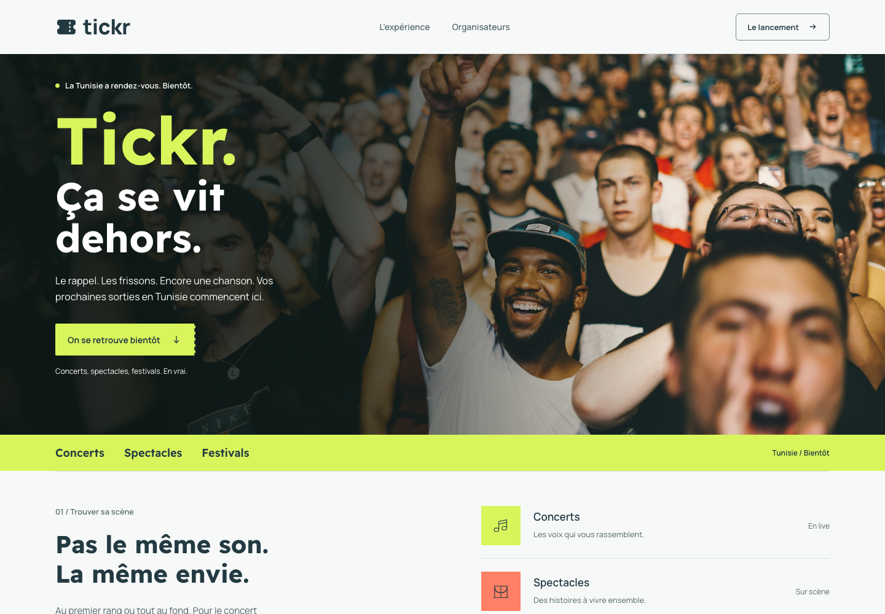
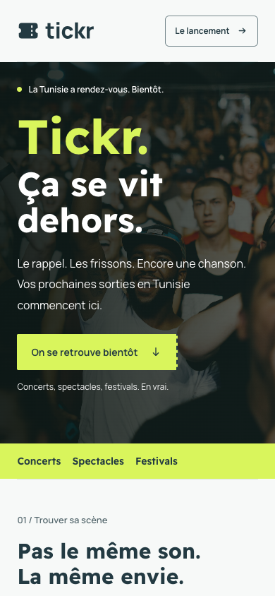

Document de proposition pour la PR. Cette édition renouvelle la
direction visuelle « Chaux & Faïence » ; les exigences métier, les
parcours et les limites API existants restent applicables. Les vues
produit sont des exemples de design.
Intention
De l’énergie pour sortir. De la clarté pour réserver.
Tickr rapproche les publics des concerts, spectacles et festivals en
Tunisie. Son identité doit donner envie de sortir et rendre l’achat
facile à comprendre.
Ça se vit dehors. Ça se réserve ici.
En scène : une photo vécue, un titre franc, un accent acide.
La perforation du billet ponctue la composition ; elle ne
devient jamais un décor omniprésent.
Vivante
Des visages, des scènes et des mots concrets. Un contraste net
entre la campagne expressive et l’interface utile.
Culturelle
Des affiches d’artistes, des lieux nommés, des dates lisibles. La
Tunisie apparaît à travers les sorties et les langues.
Fiable
Un prix détaillé, une disponibilité explicite, un vrai statut de
commande. La confiance se lit dans l’information.
Contemporaine
Des titres Readex Pro assumés, une composition de programme
culturel. Manrope et des écrans sobres pour réserver.
Références consultées
Des principes observés. Une expression propre à Tickr.
Recherche du 17 octobre 2026. Les sites sont des références de
conception ; leurs marques, images et mises en page ne sont pas
réutilisées.
Luma
Une lecture rapide de l’événement : image, date, lieu, action.
Pour Tickr : laisser l’affiche guider la
découverte et garder les faits à proximité.
Version principale Encre sur blanc ou
pastel. Ne pas recolorer chaque lettre.
Version inversée Blanc sur fond encre uni.
Conserver le dessin vectoriel.
Protection
Réserver autour du logo au moins ¼ de la hauteur du symbole. Aucun
texte, bord de carte ou visuel dans cet espace.
Tailles minimales Signature : 88 px écran /
24 mm imprimé. Symbole : 24 px écran / 7 mm imprimé.
Proposition de signature. Géométrie du symbole originale ; lettres
vectorisées à partir de Manrope, sous licence SIL Open Font License.
Les fichiers SVG restent nets sans police installée.
Filet décoratif #D9E2E1. Contour de contrôle #75878C. Un
filet clair ne délimite pas seul un champ. Sur sauge, lilas et
coquillage, employer le pétrole pour les contours de contrôle.
Interaction
Survol / pression #264851. Texte blanc sur l’action
pétrole. Focus visible, indépendant du survol.
Production
Référence numérique : sRGB. Impression : conversion via
profil de l’imprimeur et épreuve. Aucun Pantone ou CMJN
prétendument équivalent.
Accents de marque
Un accent qui réveille. Pas un arc-en-ciel.
Brume#DCEAF3 RGB 220 / 234 / 243
Acide#D9F55C RGB 217 / 245 / 92
Corail#FF8066 RGB 255 / 128 / 102
Sauge#DDE9DF RGB 221 / 233 / 223
Lilas#E7E1F0 RGB 231 / 225 / 240
60 % respiration
25 % encre / photo
15 % accent
Repère de composition pour les supports de marque, pas une contrainte
mathématique pour chaque écran. La photographie événementielle garde
sa propre couleur.
Une dominante par composition
Acide en signature, corail en contrepoint ponctuel. Jamais deux
boutons concurrents. Les pastels restent des fonds secondaires ;
coquillage et beurre demeurent disponibles dans les tokens.
La couleur ne nomme pas l’état
Texte encre sur acide et corail, jamais blanc. Ces accents ne
signifient ni succès ni erreur. Les états métier gardent leur
couleur dédiée, une icône et un libellé explicite.
Lisibilité
La douceur reste lisible.
Les paires autorisées ci-dessous sont vérifiées par calcul WCAG. Les
valeurs arrondies sont générées depuis les hexadécimaux ; elles ne
constituent pas un audit complet du produit.
Texte / élément
Fond
Rapport calculé
Usage
Encre #233A42
Porcelaine #F7F9F8
11.31 : 1
Texte courant ≥ 4,5 : 1
Ardoise #52656B
Brume #DCEAF3
4.98 : 1
Texte secondaire ≥ 4,5 : 1
Ardoise #52656B
Lilas #E7E1F0
4.79 : 1
Texte secondaire ≥ 4,5 : 1
Blanc #FFFFFF
Pétrole #315B64
7.47 : 1
Bouton principal ≥ 4,5 : 1
Succès #32634F
Sauge #DDE9DF
5.54 : 1
Texte + icône + état
Erreur #8D433F
Coquillage #F2DED7
5.39 : 1
Message actionnable
Contour #75878C
Blanc #FFFFFF
3.75 : 1
Limite d’un contrôle ≥ 3 : 1
Blanc #FFFFFF
Brume #DCEAF3
1.23 : 1
À proscrire pour le texte
44 px
Cible tactile choisie par Tickr pour les contrôles interactifs,
même si l’icône fait 24 px.
3 px + 3 px
Contour de focus pétrole et décalage. Sur fond sombre : contour
brume.
200 %
Vérifier zoom texte, clavier, lecteur d’écran, erreur, réduction
de mouvement et reflow à 320 px.
Typographie
Readex attire. Manrope guide.
Readex Pro 700 pour les titres de campagne : rond, franc,
généreux. Manrope 400–700 pour le corps, les contrôles et les
chiffres. Approche toujours à zéro, sans comprimer les lettres.
Aa
Readex 400–700 · Manrope 400–800 Fichiers locaux · SIL Open Font License
Ce soir, on sort. Concerts, théâtre et découvertes. 42,000 DT · 20:30 · 2026
400 / Texte
Les informations qui permettent de choisir une sortie, de
comprendre le prix et de retrouver son billet.
600 / Interface
Voir les événements Choisir mes billets Retrouver ma
commande
700 / Readex
Le bon billet. La bonne soirée.
Manrope, Mikhail Sharanda et contributeurs. Distribution locale :
sous-ensemble latin variable ; ajouter les sous-ensembles nécessaires
avant d’ouvrir une nouvelle langue. Aucun poids synthétique.
Échelle & langues
Une hiérarchie sans hésitation.
Display · 72/80 · 700On sort ?
H1 · 48/56 · 700Les événements
H2 · 32/40 · 700À découvrir
H3 · 24/32 · 700Votre billet
Intro · 18/28 · 400La prochaine sortie.
Corps · 16/26 · 400Une sortie près de vous.
Petit · 14/22 · 400Frais inclus dans le total.
Légende · 12/18 · 500Exemple de maquette
Les lignes affichées ici sont réduites pour comparer les rôles.
Les valeurs à gauche sont celles du produit. Display mobile :
48/56 ; maximum campagne : 96/104. Pas de texte essentiel sous 14
px.
Français d’abord · Arabe prêt à composer
خرجتك الجاية تبدأ من هنا
حفلات وعروض ومهرجانات في تونس.
Readex Pro · 400 à 700 Texte arabe à interlignage généreux
; sans approche forcée ni italique.
RTL · Grille et ordre de lecture reflétés.
Propriétés CSS logiques. Les logos et affiches gardent leur
orientation.
Prix · Chiffres tabulaires.
<bdi> autour des montants et références. TND à
trois décimales via Intl.NumberFormat, libellé DT en
contexte tunisien.
Les textes arabes illustrent la composition ; une relecture par
une personne arabophone précède la mise en ligne.
8 colonnes · gouttière 24 px. Marges latérales 32 px. Deux
cartes par ligne si lisibles.
Mobile · < 768
4 colonnes · gouttière 16 px. Marges latérales 20 px. Une
action et une lecture verticales.
Espacements
4
8
12
16
24
32
48
64
8–12 px dans un groupe. 24–32 px entre groupes. 64–96 px entre
grandes sections desktop.
Rayons par fonction
8 px Contrôle
8 px Carte
0 px Section
Pill uniquement pour les filtres et badges. Les ombres servent les
objets et les panneaux superposés ; le contenu repose sur la
grille.
Composants
Des actions faciles à reconnaître.
Spécimens réduits pour ce document : le texte des champs du produit
mesure au moins 16 px. Les éléments de cette page ne déclenchent
aucune action. Le prototype de lancement permet de tester de vrais
contrôles.
Choisir mes billetsVoir les détailsSurvol / pressionFocus clavier
IndisponibleTraitement en cours…Concerts✓ Concerts
✓ Paiement confirmé Votre billet est
disponible dans votre commande.
◷ Réservation bientôt expirée Vérifiez le
temps restant avant de continuer.
! Paiement non confirmé Vérifiez votre
commande avant de recommencer.
i Bientôt disponible Le lancement sera
annoncé ici.
Statuts distincts
Le retour depuis un prestataire ne vaut pas confirmation. Tant que
le serveur n’a pas confirmé, afficher « Vérification du paiement »
et une référence de commande.
État vide
Aucun événement pour ces dates. Essayez une
autre date ou retirez un filtre.
Épuisé
Conserver l’événement et ses informations. Afficher « Complet »,
désactiver l’achat et proposer de revenir à la découverte.
Succès
#32634F sur #DDE9DF. Confirmation vérifiée uniquement.
Attention
#76581C sur #F2EBCF. Délai ou action à surveiller.
Erreur
#8D433F sur #F2DED7. Cause utile et prochaine action.
Images, signes & matière
La scène avant la sculpture.
Vécu, pas décoratif
Montrer les personnes, les artistes, les lieux. Une photo à
l’échelle de la page, sans carte flottante ni filtre pastel.
Garder un sujet identifiable et une zone lisible pour le titre.
La photo de ce concept est illustrative, issue d’Unsplash.
Elle ne représente pas un événement Tickr ni un lieu tunisien
vérifié. Source et limites : REFERENCES.md.
Le billet SVG mat reste un actif secondaire, adapté à un état
vide ou un support explicatif. La perforation devient un détail
de bordure, jamais une fausse preuve d’admission.
Photographie & affiches
Des lieux et publics réels, une lumière naturelle, une scène
vécue. Utiliser des photographies autorisées et créditées.
Respecter les couleurs et recadrages validés des affiches
d’artistes.
Aucun faux public, faux logo de partenaire ou filtre pastel
appliqué systématiquement. Les visuels abstraits de ce guide sont
des compositions originales de démonstration.
Icônes
Musique
Date
Lieu
Heure
Billet
Suite
Grille 24 px · trait 1,5–2 px · extrémités arrondies. Bibliothèque
produit : Heroicons Outline déjà présente. Flèches directionnelles
reflétées en RTL.
Lancement · desktop
Un lancement qui donne envie de sortir.
tickr · aperçu de la page de lancementConcept responsive

Un message
Une promesse lisible, une indication « Bientôt en Tunisie »,
aucun compte à rebours inventé.
Une scène
Une photographie plein cadre, Tickr visible dès l’ouverture,
puis un bandeau de programme. Pas de photo dans une carte.
Une action
Laisser son e-mail dans la démonstration. Validation et
consentement testables, sans collecte réelle.
Lancement · mobile & alternative
La même idée, dans la main.
Tickr, la signature et l’action restent dans la première vue,
avec un aperçu de la suite. Chaque contrôle reste confortable au pouce.
Mobile
Une colonne. Image contenue dans la largeur. Pas de survol
nécessaire ; pas d’animation continue. Le formulaire possède
un label visible et un statut annoncé.
Alternative statique
Pour une campagne sobre : reprendre la signature, le titre et
un aplat acide avec le symbole. La photographie est facultative, le
contenu reste complet.

Les aperçus sont des captures du prototype livré. Leur contenu est une
proposition de lancement ; aucun événement, contact commercial ou date
de mise en ligne n’est annoncé comme confirmé.
Application produit · découverte
Les affiches font le spectacle.
TunisCe week-endToutes les sorties
Exemples fictifs de mise en page
Scène ouverte.Création graphique de démonstration
Musique
Scène ouverte
Ven. 23 oct. · 20:30
Tunis · Lieu à confirmer
À partir de 42,000 DT
Hors frais de service
Place au rire.Création graphique de démonstration
Spectacle
Place au rire
Sam. 24 oct. · 19:00
Sousse · Lieu à confirmer
À partir de 35,000 DT
Hors frais de service
Une autre scène.Création graphique de démonstration
Festival
Une autre scène
Dim. 25 oct. · 17:00
La Marsa · Lieu à confirmer
Complet
Informations toujours accessibles
Date, lieu et prix sont visibles sans ouvrir la fiche. Les cartes se
distinguent par leurs affiches ; la structure reste constante. Un
filtre actif combine contour, coche et libellé. Les états complets
restent dans la liste.
Application produit · achat
Réserver, puis payer auprès du vendeur.
L’interface se resserre autour du billet, du prix et de l’étape
suivante.
Quatre informations
Type de billet. Quantité. Total. Consignes du vendeur. Les détails
de l’événement restent visibles. Le serveur fournit les champs
requis et les moyens disponibles ; ne pas inventer d’option.
Une réservation réelle
Afficher l’échéance serveur, la date et l’heure de Tunis, sans
durée fixe côté client. Annoncer les seuils utiles et l’expiration,
pas chaque seconde. Une réservation n’est pas une entrée valide.
Espèces · cible de lancement
Le vendeur reçoit les espèces ; Tickr enregistre son attestation.
Commission hors ligne : 0 %. Passerelles désactivées. Ce parcours
cible reste conditionné à la livraison du backend hors ligne.
Récapitulatif · exemple fictif
Réservation non payée · exemple fictif Échéance : 22 octobre
2026 à 18:30 · Tunis
Scène ouverte
Tunis · 23 octobre 2026 · 20:30
2 billets × 42,000 DT84,000 DT
Frais de service · hors ligne 0 %0,000 DT
Total à remettre au vendeur84,000 DT
Montants et échéance fournis par le serveur. Aucune collecte
d’espèces par Tickr.
Moyen de paiement
Espèces auprès du vendeur
Uniquement si cette méthode est disponible dans l’API.
La réservation seule ne confirme ni paiement ni entrée.
Réserver · 84,000 DT à régler
Application produit · billet & surfaces sombres
Le billet reste le premier rôle.
Un fond nuit pour cadrer le billet. Une surface claire pour
l’entrée, même dans un lieu sombre.
Le billet conserve le nom de l’événement, la date, le lieu, le
titulaire et une référence. Le QR réel est généré à partir des
données validées et entouré d’une zone calme adaptée à sa taille.
Avant paiement : réservation non payée, non admissible, sans PDF
final. Après confirmation serveur : billet téléchargeable.
Le QR ci-contre est fictif et non scannable.
Cette application montre une surface sombre, pas une charte
complète de thème nuit. Le thème sombre de l’ensemble du produit
nécessite une spécification et une vérification de tous les états.
Exemple de billet · non valable
Scène ouverte
23 octobre 2026 · 20:30 Tunis · Lieu de démonstration
Emplacement QRNon scannable Démonstration
Amel Ben Salem Billet standard · 42,000
DT
Réf. DEMO-TKR-001 · Non valable
Télécharger le billet
Communication
Reconnaissable, même en petit.
Ça se vit dehors.
Bientôt en Tunisie
Post · 1080 × 1080 Marges : 64 px. Message
en 2 lignes. Signature et annonce gardent une zone calme.
Encore une chanson.
Le lancement sera annoncé ici.
Version typographique Un aplat et une
phrase. Aucune photo ou illustration nécessaire à la
reconnaissance.
On se retrouve devant.
Story · 1080 × 1920 Zones sûres : haut 250
px, bas 340 px. Vérifier les interfaces de chaque réseau.
Gabarits de composition. Pour l’export : texte vectoriel ou rendu à la
taille finale, PNG sRGB, textes alternatifs descriptifs, sous-titres
pour toute version vidéo.
Comportement & voix
Le détail répond à la personne.
Mouvement
Durée
Usage
160 ms
Couleur, focus, pression d’un contrôle
240 ms
Ouverture d’un panneau, confirmation
420 ms maximum
Une introduction mesurée au lancement
Courbe standard : cubic-bezier(0.2, 0, 0, 1). Le titre entre une
fois, sur 12 px en 420 ms. Aucune animation continue, aucun
défilement automatique du programme.
Avec prefers-reduced-motion: reduce : supprimer tilt,
transition de déplacement et entrée animée. L’information reste
visible immédiatement.
Le prototype utilise une photo locale et une entrée CSS
facultative. Le texte et le formulaire restent accessibles si
JavaScript est indisponible ; le formulaire annonce alors sa
limite.
Ton de voix
Direct, accueillant, précis. Une idée par phrase. Des mots connus.
La marque peut parler de sorties ; le paiement parle de montant,
délai et confirmation.
À écrire
« Ça se vit dehors. » « Encore une chanson. » « Choisir mes billets. » «
Votre paiement est en cours de vérification. » « Aucun
événement pour ces dates. »
À éviter
« Révolutionnez vos expériences. » « Des milliers de fans
nous attendent. » « Paiement 100 % sécurisé. » «
Dépêchez-vous ! » sans information réelle.
Règles de composition
Expressif dehors. Précis dedans.
À faire
Un aplat dominant et une hiérarchie nette.
Acide en campagne ; pétrole dans les formulaires.
Texte encre sur acide et corail.
Photo vécue, titre court et une seule perforation.
Des espaces fondés sur une grille de 4 px.
La signature vectorielle et ses proportions.
Des informations d’événement vérifiables.
Une composition mobile conçue à part entière.
À éviter
Texte blanc sur des fonds pastel clairs.
Halos lumineux, néons ou dégradés décoratifs.
Plusieurs couleurs d’action concurrentes.
Toutes les sections enfermées dans des cartes.
Faux témoignages, compteurs ou dates de lancement.
Logo étiré, incliné, ombré ou recomposé.
Animation continue derrière le texte.
QR de démonstration présenté comme un billet.
Un doute sur un composant ?
Commencer par son rôle, son contenu et ses états. Puis appliquer
les tokens existants. Ajouter un token seulement si un besoin
partagé le justifie.
Un doute sur une image ?
Le sujet est une sortie, un lieu ou un billet. Si l’image ne dit
rien de Tickr et n’aide pas à comprendre le produit, la retirer.
Le PDF est prêt à partager. Le HTML est la source visuelle
éditable. Les SVG et polices fonctionnent localement. Les tokens
sont une base d’intégration à adapter au CSS du produit.
Vérifications avant publication
Valider le nom, la signature et la proposition visuelle.
Relier une collecte réelle à un stockage et un consentement
adaptés.
Remplacer tous les contenus fictifs de démonstration.
Relire le français et les traductions arabes.
Vérifier les droits des visuels et des affiches.
Tester les parcours réels, le clavier et les lecteurs d’écran.
Vérifier les prix et statuts renvoyés par l’API.
Valider l’épreuve avant toute impression.
Le prototype n’est pas connecté au backend et ne collecte pas
d’adresses. Cette livraison documente et montre une direction
visuelle ; elle ne remplace pas la réalisation des parcours du
produit.
Les licences et les URL des fichiers de police sont livrées avec
les actifs. Aucun actif visuel des sites de référence n’est
inclus. Photo illustrative : Unsplash ; provenance et limites
d’usage dans REFERENCES.md. Remplacer par un visuel local autorisé
avant diffusion publique.
Conception originale pour Tickr Palette
En scène, composition, symbole, illustration de billets et
maquettes de cette édition. Les textes et événements fictifs servent
la démonstration. Les logos et noms de sites cités appartiennent à
leurs titulaires.
Proposition v1.1 · 18 octobre 2026 · À examiner dans la PR avant
adoption comme référence de marque.